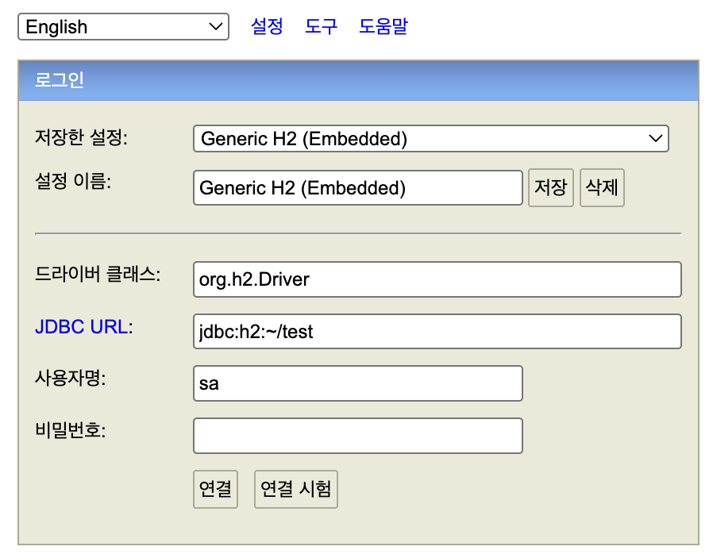

h2 Database sh 파일 실행 시 premission denied 접근 권한 없음 현상 발생
(base) xxx@xxx-ui-noteubug bin % ./h2.sh
zsh: permission denied: ./h2.sh
ls -l 명령어를 입력해 파일 접근 권한 출력
가장 앞의 -는 일반 파일, d는 디렉토리를 의미한다.
그 뒤 9문자는 소유자, 그룹, 다른 사용자의 r(읽기) w(쓰기) x(실행) 권한이다.
(base) xxx@Xxx-ui-noteubug bin % ls -l h2.sh
-rw-rw-r--@ 1 xxx staff 109 8 10 2024 h2.sh
chmod +x file_name 으로 해당 파일에 대한 실행 권한 추가 후 실행
(base) xxx@xxx-ui-noteubug bin % chmod +x h2.sh
(base) xxx@xxx-ui-noteubug bin % ./h2.sh
정상적으로 동작된다.
